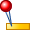
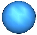
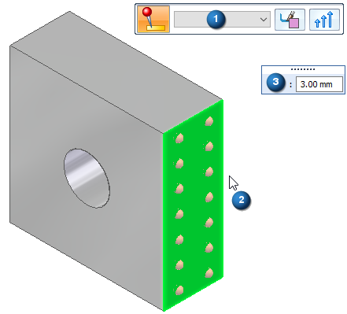
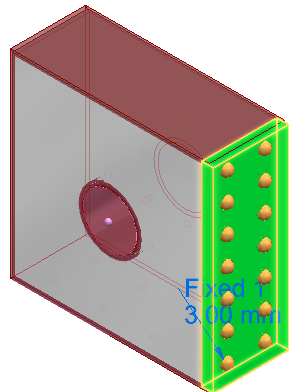

Fixed constraint
Defining degrees of freedom as a boundary condition on selected faces of the design space model in a generative design study is part of the Generative Design workflow.
Use the Fixed constraint command

to prevent all rotation and movement of the selected geometry. A fixed constraint
constrains all six degrees of freedom (DOF): three translational and three rotational.A fixed constraint is equivalent to a displacement constraint that has a displacement of zero.
Applying a fixed constraint
When defining a fixed constraint, you use the options on the Constraints command bar and the dynamic input boxes to specify:
-
Geometry—The face or feature on which to apply the fixed constraint.
-
Offset volume—The additional material to keep on the face where the constraint is applied. The Offset value that is displayed as a default is the recommended value based on the volume of the design space and the study quality.

Editing fixed constraints
The fixed constraint symbols are added to the selected geometry in the design space, and an edit definition handle is shown on the design space body, with a label such as Fixed 1. You can use this handle to edit the inputs that created the constraint.

A corresponding entry is added to the Generative Design pane, under the Constraints node, as Fixed 1.
-
To review the values assigned to the constraint, hover over the label name in the Generative Design pane, or click the label to display the handle on the body.
-
To edit the constraint, double-click the label in the Generative Design pane, or click a displayed handle on the body.
How do I
Generative Design workflowGenerative Design example
Suppress individual loads to compare results
Define a physical load condition
Define an operational constraint
Set a maximum displacement
Planar Symmetry
Learn more
Using load casesLook up more details
Pinned constraintGraphic Symbol Size dialog box
Color dialog box